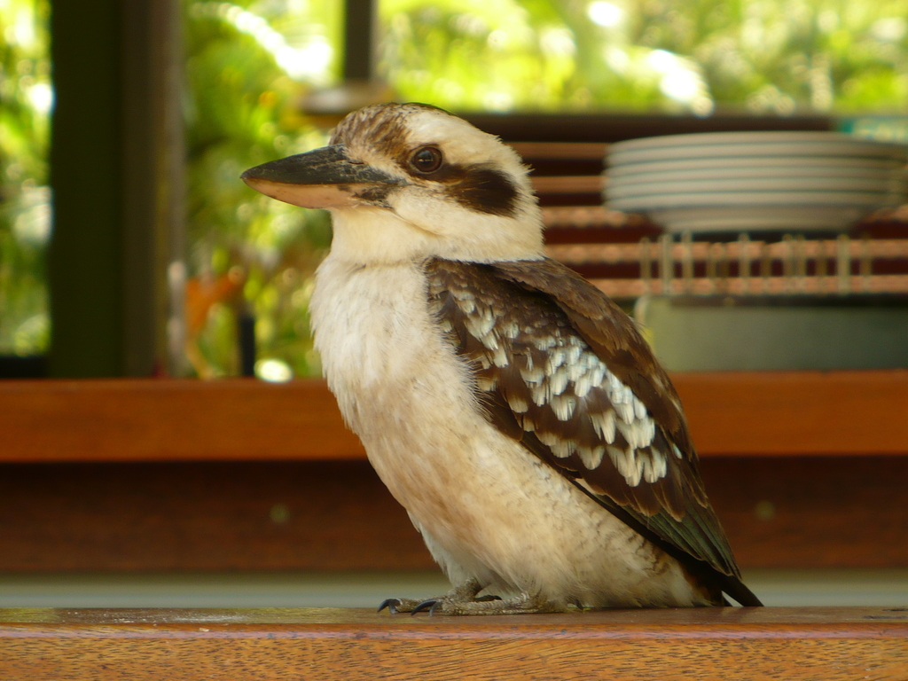
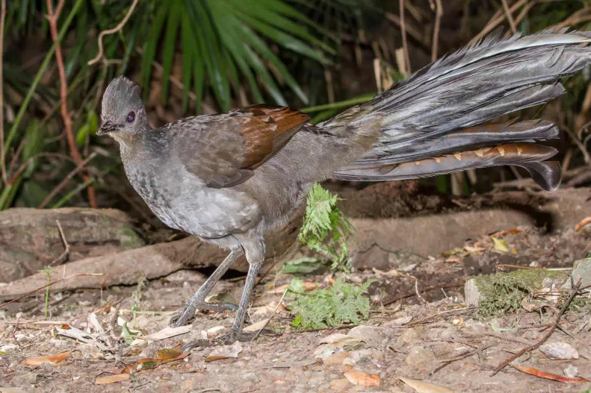
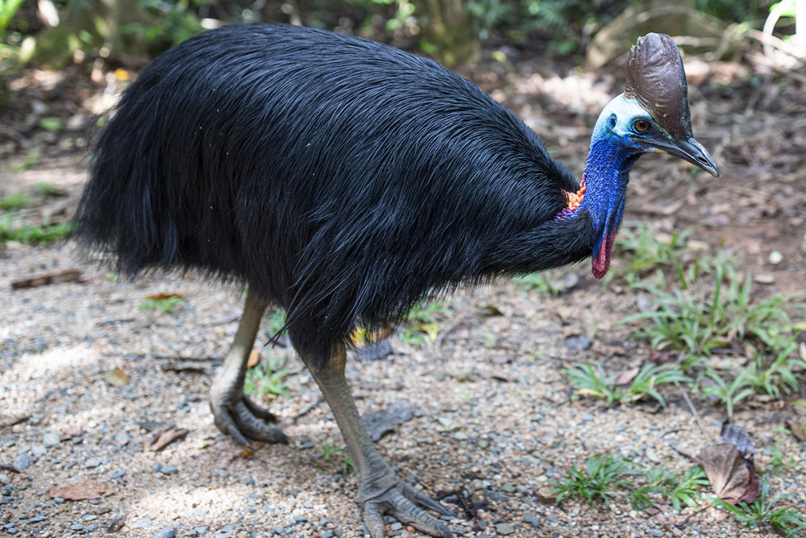
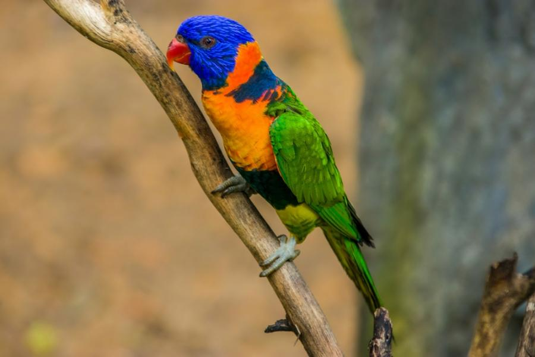
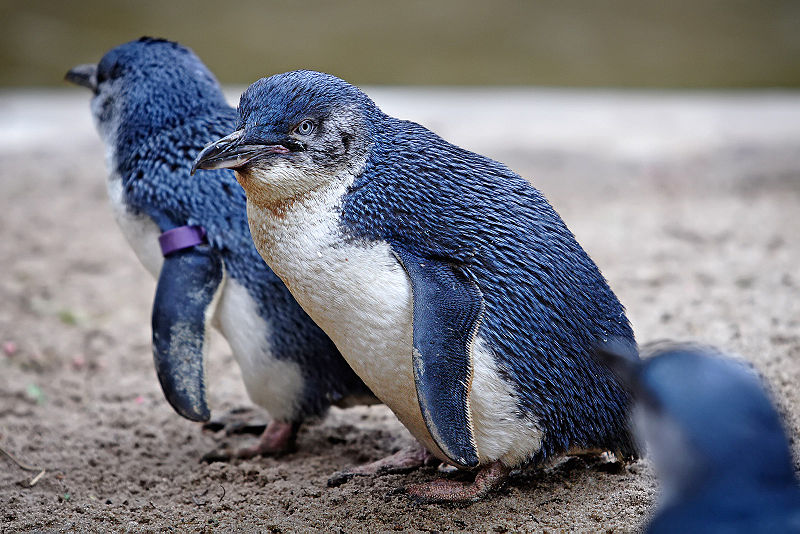

Aвстралия
|  | Кукабара | |
| Кукабара е род птици от семейство Alcedinidae, известен със своите уникални и характерни звуци, които наподобяват смях. Тези птици са широко разпространени в Австралия и части от Нова Гвинея и Източна Индонезия, и са известни със своята привързаност към хабитати, свързани с вода. Един от най-разпознаваемите аспекти на кукабарите е тяхният характерен смях, който звучи много като човешки смях. Този звук е част от комуникацията им и може да се чува на големи разстояния. Смехът често се използва за отбелязване на територия и да изплаши други хищници. | ||
{kind=link}
| Супербова лира |  | |
| Супербова лира е една от най-забележителните и красиви птици в Австралия. Тази птица е известна със своето невероятно умение за имитация на звуци и мелодии, което я прави уникална в света на птиците. Звукът на супербовата лира е толкова впечатляващ и разнообразен, че тя може да имитира почти всякакви звуци, включително и човешки. Този невероятен вокален репертоар я прави една от най-забележителните птици в света. | ||
{kind=link}
|  | Касуар | |
| Касуар е голяма, необичайно изглеждаща и опасна птица, родом от тропическите гори на Нова Гвинея, Австралия и някои околни острови. Касуарите са безполетни птици, които се характеризират със своето впечатляващо изграждане, ярки цветове и мощен вид. Касуарите са едни от най-опасните птици в света. Те могат да достигнат скорости до 50 км/ч и да нанасят силни удари с краката си, които могат да бъдат фатални за хищници или хора, ако се почувстват заплашени. | ||
{kind=link}
| Дъгова лорикета |  | |
| Дъгова лорикета, известна още като австралийска дъгова лорикета, е една от най-колоритните и ярки птици в Австралия. Тези птици са обичани заради своята красота и социално поведение. Те са част от семейството Psittacidae, което включва папагалите. Дъговата лорикета е известна със своето ярко оперение и веселия си характер. Понякога те са наричани „птици на усмивките“, благодарение на радостното си поведение и шумни звуци, които издават. Те също така могат да бъдат много игриви, като често играят с други птици или дори с хора. | ||
{kind=link}
|  | Малък пингвин | |
| Малък пингвин, известен още като вълшебен пингвин или син пингвин, е най-малкият вид пингвини в света. Тези симпатични и уникални птици обитават южното крайбрежие на Австралия и Нова Зеландия и са известни със своето малко размер и характерно поведение. Малките пингвини често се наричат "вълшебни пингвини" поради своята чаровна външност и забавни поведения, както и факта, че през нощта те могат да създадат впечатление, че се появяват като „пингвини от приказките“, когато се появяват от своите гнезда на брега. | ||
{kind=link}